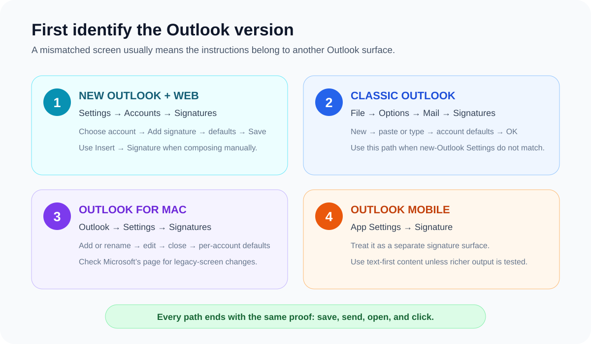

How to Add an Email Signature in Outlook (All Versions)
Choose your Outlook version first. New Outlook and Outlook on the web use Settings → Accounts → Signatures. Classic Outlook for Windows uses File → Options → Mail → Signatures. Outlook for Mac uses Outlook → Settings → Signatures. Add or paste the signature, set new-message and reply defaults, save, then test a received message.
Microsoft’s current support page separates new Outlook, classic Outlook, and web instructions because the labels and controls differ. Keep its official Outlook signature guide open while following the version-specific steps below.

New Outlook for Windows and Outlook on the web
- Select Settings.
- Open Accounts → Signatures. If several accounts are connected, choose the intended account first.
- Select Add signature and give it a distinct name.
- Type or paste the signature into the editor.
- Choose whether it applies to new messages and to replies/forwards.
- Select Save.
- Create a new message and use Insert → Signature if you want to choose a saved signature manually.
Microsoft groups new Outlook, Outlook on the web, and Outlook.com on the same current support surface. If an older account still shows different labels, search Settings for “signature” and confirm the Microsoft support tab that matches the interface.
Classic Outlook for Windows
- Open File → Options.
- Select Mail, then Signatures.
- Select New, name the signature, and paste or type it into the editor.
- Choose the email account plus defaults for new messages and replies/forwards.
- Select OK to save, then send a test message.
If Settings → Accounts → Signatures does not exist, you may be in classic Outlook. Microsoft explicitly tells readers to switch to its Classic Outlook instructions when the new-Outlook path does not match.
Outlook for Mac
- From the Outlook menu, select Settings.
- Under Mail, select Signatures.
- Rename the standard signature or add a new one, then type or paste the content.
- Close the editor when finished.
- Under the default-signature controls, choose the account plus defaults for new messages and replies/forwards.
- Send a received-message test from that account.
These labels come from Microsoft’s current Outlook for Mac signature instructions. Microsoft also notes that legacy Outlook for Mac support changes in October 2026, so older screens should be checked against the current support page rather than treated as permanent.
Paste the product’s HTML using the correct control
The button in Email Signature Generator is labelled Copy HTML, not “Copy for Gmail.” After unlocking export, use Copy HTML and paste normally with Ctrl+V on Windows or Cmd+V on Mac.
The product uses table-based layout, inline styles, explicit image dimensions, and public hosted assets when configured. That is a conservative compatibility strategy, not a guarantee of identical rendering across classic Outlook, new Outlook, web, Mac, or mobile.
Do not approve the editor preview alone. Outlook versions do not share one interface or one rendering path. Save, send, and inspect the exact client combination your team and recipients use.
Outlook mobile is a separate signature
The Outlook mobile app has its own Settings → Signature control. Available formatting can vary by app version and account, and Microsoft’s current desktop support page does not document a portable rich-HTML paste workflow for the mobile editor. Use a short text-first mobile signature unless you have tested richer formatting in the exact app version you deploy.
Outlook signature troubleshooting
| Symptom | Likely check | Repair |
|---|---|---|
| Instructions do not match the screen | New Outlook, classic Outlook, web, Mac, or mobile | Identify the version first and use its matching path. |
| Signature appears for the wrong account | Account selector and per-account defaults | Save the signature against the intended account and test from it. |
| Formatting changes after send | Complex layout, unsupported CSS, or paste conversion | Simplify the HTML, use inline styles and tables, then retest the received message. |
| Photo or logo is missing | Private, local, temporary, or blocked remote image URL | Use a stable public HTTPS URL and keep essential details as text. |
| Reply threads become too large | Full signature default applied to every reply | Use a shorter reply signature or no reply default. |
Run a received-message test
- Send from the exact Outlook account and version being configured.
- Open the message in another Outlook version and in Gmail.
- Inspect a narrow mobile inbox for clipping or horizontal overflow.
- Click each link and verify the exact destination.
- Reply and forward once, then check the image-blocked fallback.
The email signature health check can inspect existing HTML before installation. Use the email signature best-practices checklist for content, accessibility, and maintenance decisions.
Build an Outlook signature, then test it
Choose from 24 templates, preview the result, and use Copy HTML when you are ready to install it in the Outlook version you actually use.
Create Your Outlook Signature